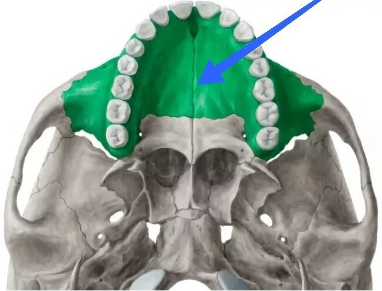
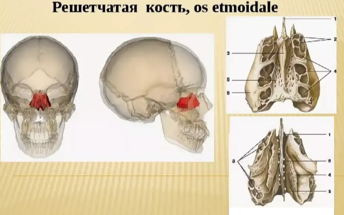

Начинать работу с максиллой мы всегда будем с расслабления срединного небного шва, поскольку именно в этой области находится наибольший очаг напряжения, стягиваюший наше лицо вглубь и вниз.
Краниальная остеопатическая самокоррекция может помочь при многих проблемах от мигреней и гайморита до зрения и неврологии.
Эти техники убирают блоки с главного небного шва, а значит, позволяют костям двигаться и "дышать", что сильно влияет на эстетику - улучшает питание тканей, уводит лимфу из области носа и глаз, расслабляет межбровную область, выравнивает асимметрию, поднимает скуловую область, нос.
Они также корректируют положение решетчатой кости, которая находится под проекцией переносицы в глубине черепа, и очень влияет на эстетику глаз и носа, межбровную область.
Все приемы выполняются чистыми руками, длинные ногти могут мешать. Сильно давить не надо, у нас нет задачи двигать кости силой, остеопатия основана на принципе мягкого воздействия малых сил, можно представить, что под пальцами у вас пластилин. Работаем неспеша мягкими пальцами от резцовой кости за передними зубами до конца твердого нёба.
В положении сидя упереть локти в стол, разместить большой палец одной руки за передние зубы на центральный шов и постоять на этой точке три дыхательных цикла. На вдохе поддавливаем шов, раздвигая кости, на выдохе не отпускаем давления пальца - так разблокируется швы.
Затем переходим в следующую точку дальше вдоль шва и так проходим все твердое небо. У меня это пять точек. Можно опустить голову на палец и воздействовать на небный шов тяжестью головы. Если не на что опереться - можно выполнять и так, но главное, следите, чтобы не было напряжения в затылке. Можно так же выполнять прием лежа на спине.
На видео я показываю быстро - делайте медленно, прочувствуйте движение костей, ощутите распирание в переносице, носу и глазах.
Можно делать так, как показываю на видео -- проходить шов поддавливающими движениями, постояв на одном месте 5-10 секунд и перемещая палец дальше по шву к гортани.